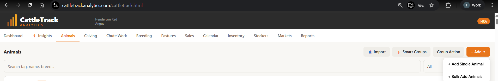
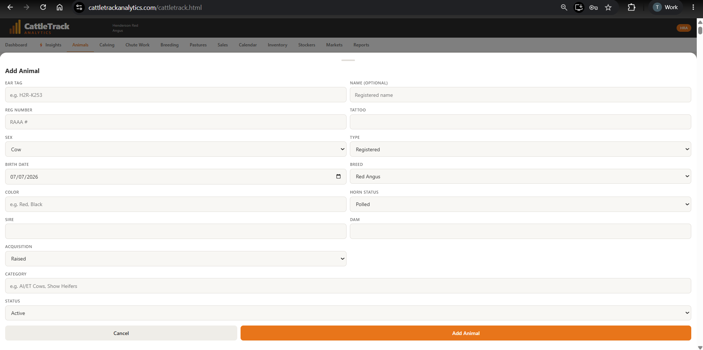
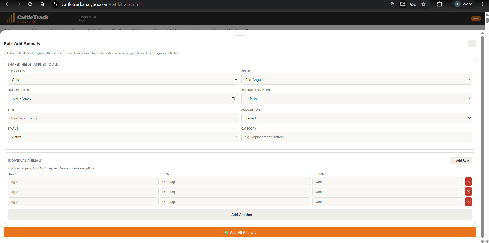
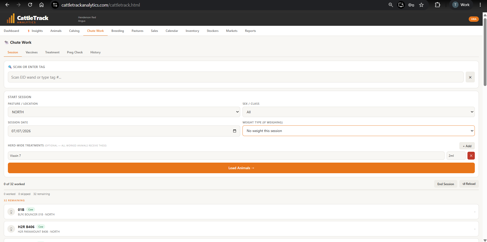
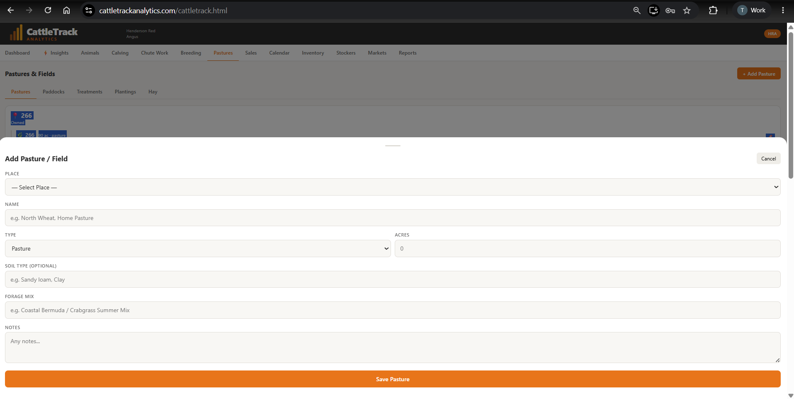
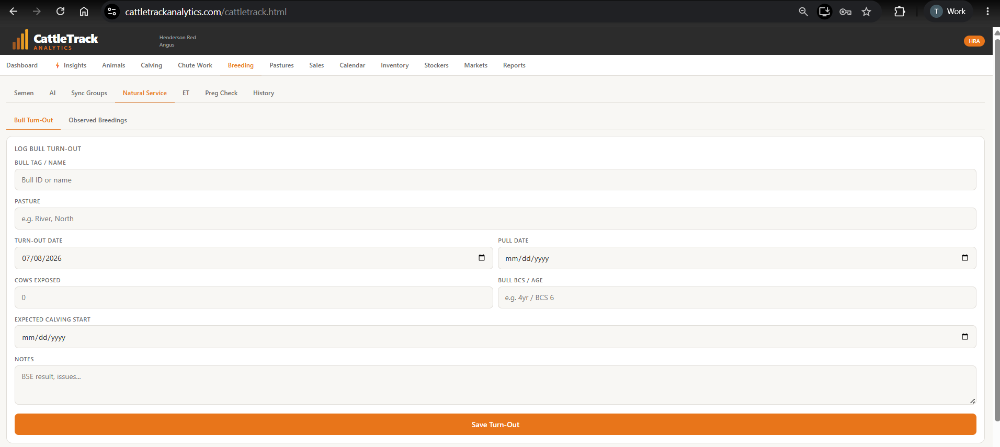
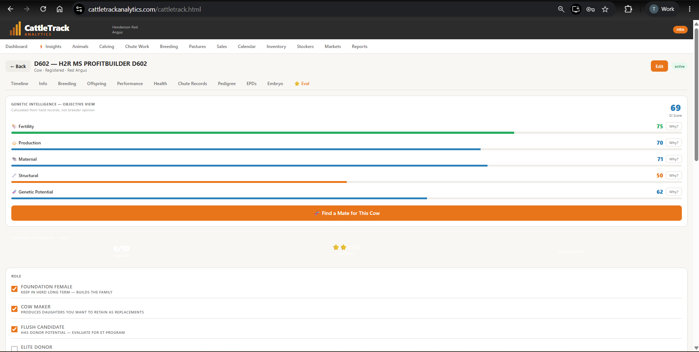

A few simple steps to get your herd set up, plus how to add CattleTrack to your phone's home screen so it opens like an app.
Go to Animals → Add Animal to enter cattle one at a time, or use Bulk Add Animals if you have several to enter at once — set shared fields like sex, breed, and pasture once, then list each tag individually below.



Next time you work cattle, open Chute Work and record weights, body condition scores, and vaccinations right there in the chute. This data feeds directly into everything else in the app.

Under Pastures, add the fields and paddocks you actually rotate cattle through. Assigning animals to a pasture lets you track rotation timing and see head counts per field at a glance.

Whether you use AI, natural service, or ET, log it under Breeding. Once you're tracking pregnancy checks and calving records, CattleTrack can show you real breeding status at a glance for every cow.

Natural Service">Once an animal has a bit of history on file, open her profile's Eval tab to see her Genetic Intelligence score — an objective breakdown of fertility, production, maternal, structural, and genetic potential, calculated from your own herd records.

Jump back into CattleTrack and start with Step 1 above.
Open CattleTrack →